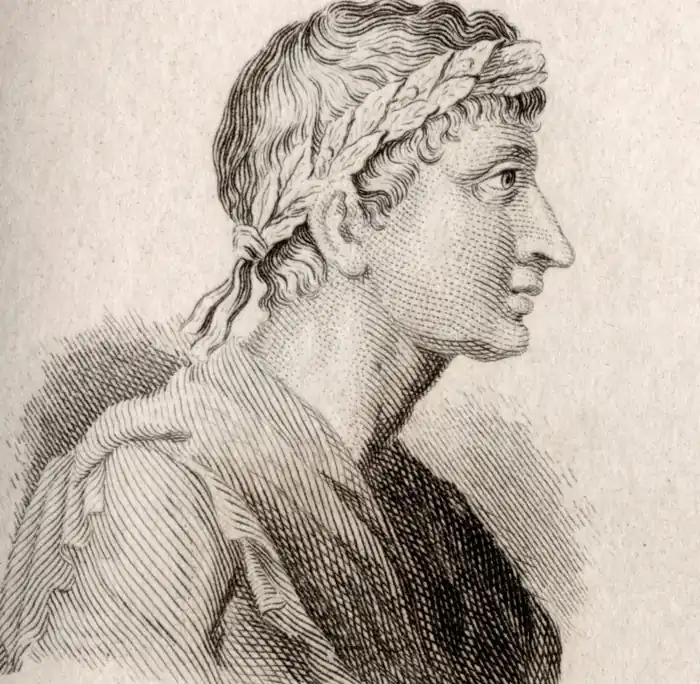

ОВІДІЙ, Публій Овідій Назон (Publius Ovidius Naso — 20.03.43 p. до н.е., м. Сульмон — 18 р., м. Томи) — давньоримський поет.Овідій народився у невеликому містечку Сульмоні, що за 150 км від Рима, у сім'ї, що належала до вельможного роду вершників. Він здобув найкращу на той час освіту. Батьки мріяли про кар'єру політичного чи судового оратора для Овідія, позаяк у нього доволі рано проявилося неабияке чуття слова. Поет, котрий детально повідомляє нам автобіографію у своїх віршах ("Скорботні елегії"; IV, 10), зізнається, що опирався бажанню родини, оскільки його більше вабила мрія про служіння музам, складання віршів ("Тільки-но слово скажу — віршем виходить воно").
Життя Овідія починалося щасливо. Молодість він провів у колі "золотої" римської молоді, з читанням віршів уперше виступив рано ("Раз на той час, може, два лезо торкнулося щік"), поезії його відразу ж здобули визнання. Це були ліричні вірші в жанрі любовної елегії, модному тоді в Римі. До Овідія в цьому жанрі виявили себе Галл, Тібулл, Проперцій, однак Овідій швидко затьмарив їх своєю славою, заслуживши репутацію "співця кохання". Збірка "Любовні елегії" ("Amores") об'єднує три книги (49 віршів), присвячених коханій поета, умовно названій іменем грецької поетки Корінни. Ще в античності намагалися встановити, хто приховується за цим ім'ям, але намарно. Поміж тим, переказ свідчить, що багато жінок прагнули видати себе за Корінну. Збірка містить чимало традиційних мотивів: клятви служіння Амурові, захоплення від милості коханої, страждання через її примхи та зради тощо. Однак при цьому чуття поета не набуває глибокого драматичного характеру. Зазвичай він висловлює його у жартівливому, грайливому тоні. Для Овідія кохання — це втіха, своєрідна гра, мистецтво, яке можна опанувати, позаяк воно має свої закони, свої правила гри. При цьому поет вирізняється дивовижною добротою, теплотою свого почуття та впевненістю у невмирущості своїх творів:
Люд нехай прагне марниць!Мені ж хай жовтоволосийФеб над кастильським струмкомкелих дзвінкий подає.Лиш би волосся вінчав мені мирт,що морозу боїться,Лиш би ті вірші до рук радо закоханий брав.Заздрість живих любить їсти.Помремо — вона відступає.Кожен, яку заслужив, матиме шану тоді.Вирвусь і я з похоронного вогнища:частка найкраща,Частка моєї душі, в пісні моїй оживе! (Тут і далі пер. А. Содомори)Щоби отримати уявлення про декламаційно-риторичний характер любовних елегій Овідія, достатньо ознайомитися з елегією (І, 2), де Амур змальований в образі якогось римського тріумфатора, чи з елегією (І, 9), де розвивається порівняння любові з військовою службою, звичайно, в іронічному сенсі. Більша задушевність притаманна елегії на смерть Тібулла (III, 9). Як більш серйозні, можна навести також для прикладу елегію (І, 15) про безсмертя поезії та елегію (ІІІ, 1), де порівнюються рівноцінні, з точки зору поета, елегія і трагедія (слід зауважити, що О. замолоду написав трагедію "Медея", котра не збереглася). Більш серйозною є й елегія (III, 13) з описом свята на честь Юнони у Фалері. "Любовні елегії" були, так би мовити, "практикою кохання"; для повноти охоплення слід було ще написати "теорію кохання" й "історію кохання" (М. Гаспаров). Наступну збірку "Героїди" ("Heroides"), або "Послання", можна назвати "історією кохання". Книга складається із 15 послань міфологічних героїнь до своїх коханих (наприклад, Пенелопи до Улісса, Філліди до Демофонта, Брісеїди до Ахілла, Федри до Іпполіта, Дідони до Енея, Деяніри до Геркулеса) і трьох послань героїв з відповідями на них героїнь (Паріса до Єлени і Єлени до Паріса, Леандра до Ґеро і Ґеро до Леандра, Аконтія до Кідіппи і Кідіппи до Аконтія). Збірка містить, таким чином, всього 21 послання. У цій книзі знайшла свій яскравий вияв притаманна Овідію майстерність поетичної варіації. Всі героїні послань перебувають в однаковому становищі: тужать, страждають, прикликають коханих. Одначе Овідій надав кожній з них своєрідності: у мові, зовнішності, навколишніх атрибутах, їхнє змалювання вже позбавлене будь-якої іронії. На міфологічному матеріалі Овідій зображає драматичні перипетії кохання з цілковитою серйозністю. Світ любовних почуттів жінки вперше в римській літературі отримав у Овідія глибоке та виразне втілення. Іронічні інтонації повертаються в поезію Овідійя, коли він створює "теорію кохання" — талановиту дидактичну поему "Мистецтво кохання" ("Ars amatoria"):Хто з-поміж римлян ще й досіне чув про мистецтво кохання, Хай, прочитавши цей твір,буде в коханні митцем.Що ж бо вітрило, весло,як судном не керує мистецтво?Що скакуни запальні?Що без мистецтва Амур?Тут він дає поради спочатку чоловікам, а потім жінкам про те, де знайти предмет кохання, як його завоювати, а потім утримати. Поет намагається переконати кожного у можливості любовної удачі за умови винахідливості, енергії, доброго, терплячого ставлення до предмета пристрасті. Міркування Овідія виявляють тонку спостережливість, знання примх людського серця, добре, поблажливе ставлення до людських недоліків та слабкостей. Легка, грайлива, витончена поема одночасно дає уявлення про чимало сторін римського побуту (вигляд житла, одяг, прикраси, наїдки тощо). Коли Овідій завершив свою любовну трилогію, йому було вже за сорок. Він сам набув чималого досвіду, втретє одружився, цього разу щасливо, у поета підростала донька. Поблизу Капітолія стояв дім поета, зручний, гостинний; за містом, на березі Тибру, розташовувався його сад, місце творчого усамітнення. Тут поет замислив дві нові праці: вчену поему "Фасти" ("Fasti") та міфо-логічну поему "Метаморфози" ("Metamorphoses"). Остання стала головним твором поета, здобувши йому світову славу. "Метаморфози" є своєрідною міфологічною енциклопедією, що об'єднує близько 300 міфів, викладених у зв'язній послідовності. Всі вони містять мотив перетворення і у сукупності покликані створити картину світу як постійного руху та змін форм, живих і неживих. Підставою для цих змін найчастіше стають перипетії кохання (міф про Нарциса, Орфея й Евридіку, Пірама і Фісбу тощо). Чарівність поеми створюється майстерним зображенням моменту перетворення. Воно змальовується як пластично-зримий процес, ніколи не миттєвий, пов'язаний з поступовим перевтіленням форм. Таїна розповіді посилюється тим, що поет ніколи не каже наперед, у що перевтілиться персонаж, і називання нової істоти відтягується якомога далі. Все це створює в читача враження присутності і занурює його в атмосферу дива. У плані хронологічної послідовності викладу найдохідливішими є перші й останні книги "Метаморфоз". Саме у книзі І змальоване першопочаткове і найдавніше перетворення, тобто перехід від хаотичного стану стихій до формування світу як гармонійно влаштованого космосу. Далі ідуть чотири традиційних епохи — золота, срібна, мідна і залізна, гігантомахія, звиродніння людей і всесвітній потоп, коли на вершині Парнасу залишаються тільки Девкаліон і Пірра, від котрих починається нове людство. До давньої міфологічної історії О. відносить також смерть Піфона від руки Аполлона, переслідування Дафни Аполлоном, міфологію Іо, Фаетона. Разом з іншими міфами книги II весь цей давній період міфології Овідій мислить як час царя Інаха, звідки і почалася найдавніша Арґоська міфологія. Книги III і IV "Метаморфоз" занурюють читача в атмосферу іншого, також дуже давнього періоду античної міфології, а саме трактують фіванську міфологію. Тут змальовані образи Кадма і Гармонії, Актеона, Семели, Тіресія (III, 1—338). Проте у цих двох книгах наявні і такі вставні епізоди, як міфи про Нарциса й Ехо (III, 339-510), Пірамата Фісбу (IV, 55-167) і подвиги Персея (IV, 604—803). Книги V—VII відносяться до часів аргонавтів. У книзі V багато дрібних епізодів і найбільший присвячений Фінею (1—235). Із книги VI як найвідоміші слід виокремити міфи про Ніобу (146-312), а також про Філомелу та Прокка (412—676). У книзі VII міфології аргонавтів —: розповіді про Язона та Медею (1—158), Езона (159-293), втечу Медеї (350-397), Тезея та Міноса (398-522). Книги VIII—IX — це міфи часів Геркулеса. У книзі VIII прославляються міфи про Дедала та Ікара (183-235), про Калідонське полюванню (260—546), про Філемона та Бавкіду (612—725). Понад половину книги IX присвячено самому Геркулесу і пов'язаним з ним персонажам — Ахелою, Нессу, Алкмені, Іолаю, Іолі (1—417). У книгу X увійшли знамениті міфи про Орфея та Евридіку (1—105), Кипариса (106—142), Ганімеда (143-161), Гіацинта (162-219), Пігмаліона (243-297), Адоніса (503-559), Атланта (560-739). Книгу XI розпочинає міф про смерть Орфея і про покарання вакханок (1—84). Тут, окрім того, є міфи про золото Мідаса (85—145) і вуха Мідаса (146-193), а також розповідь про Пелея та Фетіду (221—265) — провісницю троянське і міфології. Книги XII і ХІІІ — троянська міфологія У книзі XII перед читачем проходять образи греків у Авліді, Іфігенії (1-38), Кікна (64—145) та смерть Ахілла (580—628). Сюди ж Овідій помістив і відомий міф про битву лапіфів і кентаврів (210— 535). Із книги XIII до троянського циклу виносяться міфи про сварку через зброю поміж Аяксом та Уліссом (1-398), про Гекубу (399— 575), Мемнона (576-622), про Поліфема та Га-латею (705-968). Книги XIII — XV присвячені міфологічній історії Риму, у яку, як завжди, вкраплені й окремі сторонні епізоди. Овідій намагається тут дотримуватися офіційної точки зору, ведучи "родовід" Римської держави від троянських поселенців в Італії на чолі з Енеєм. Цей останній після відплиття із Трої потрапляє на острів Делос де царя Анія (XIII, 623—704); далі йдуть найголовніші епізоди — про Главка і Сціллу (XIV, 1—74) про війну з рутулами (445—581), про обожнювання Енея (582—608). У книзі XV — історія одного із перших римських царів — Нуми, котрий навчається у Піфагора і мудро керує своєю державою. Після цілого ряду метаморфоз Овідій закінчує свій твір похвалою Юлію Цезарю й Августу, котрі є богами — покровителями Риму. Упродовж століть "Метаморфози" залишалися улюбленою лектурою широкого читача який зазвичай за їх посередництвом знайомився з корпусом античної міфології.Поміж тим, коли Овідій перебував у розквіт: життєвого і творчого шляху, його спіткало жахливе нещастя.